SLNews — implicit state machines
0. Overview — how the machines couple
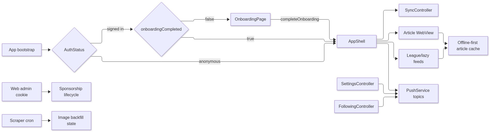
1. App session gate (auth × onboarding)
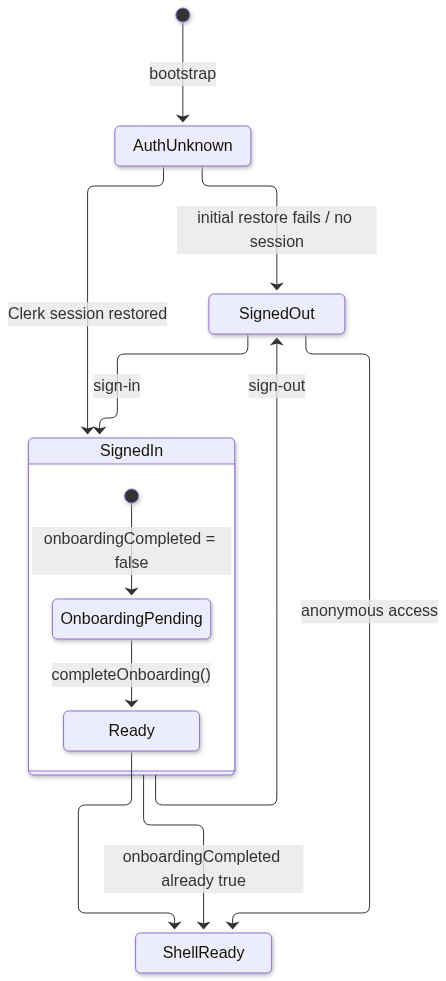
2. Onboarding completion machine
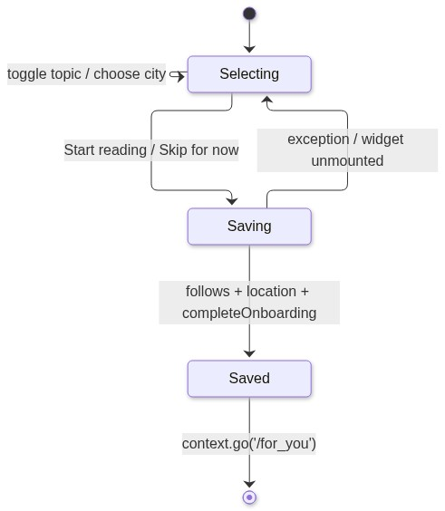
3. Push registration + FCM topic segmentation
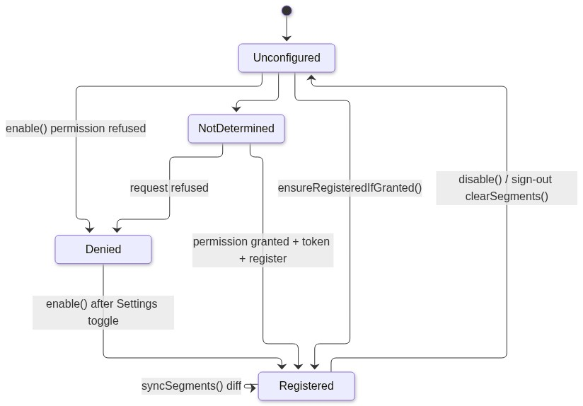
3. Push registration + FCM topic segmentation
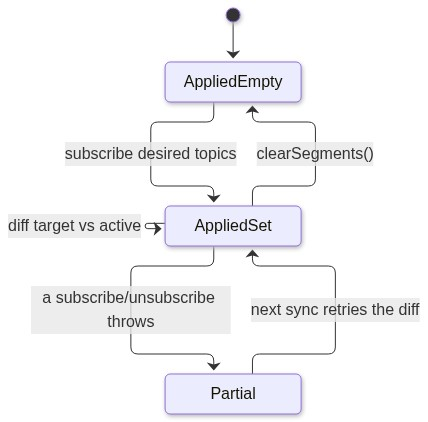
4. Sync machine
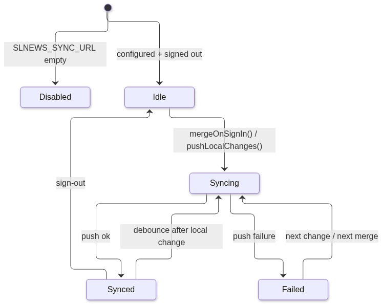
5. Article WebView reader
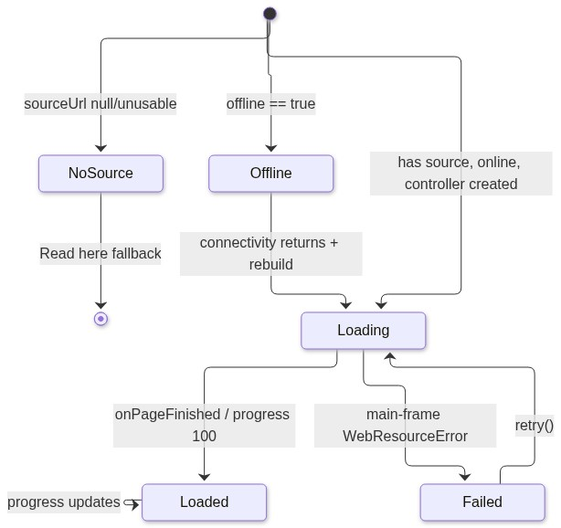
6. Ad impression/tap machine
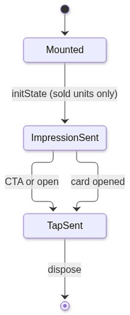
7. Offline-first article repository
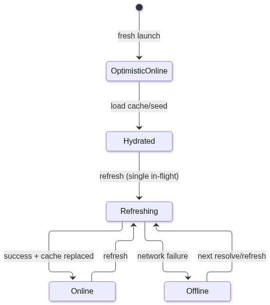
8. Lazy league feed lifecycle (Sports tab)
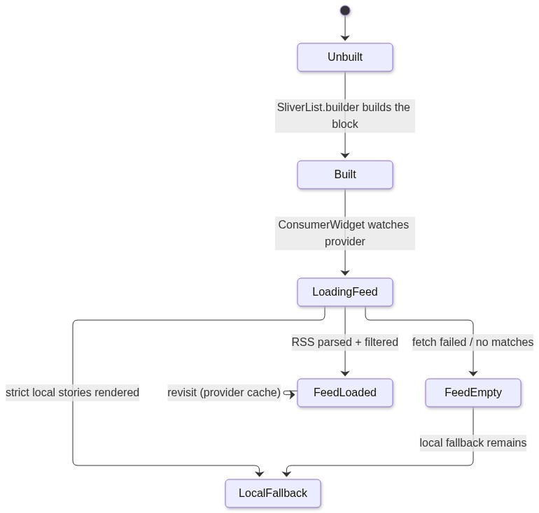
9. Admin authentication gate (web)
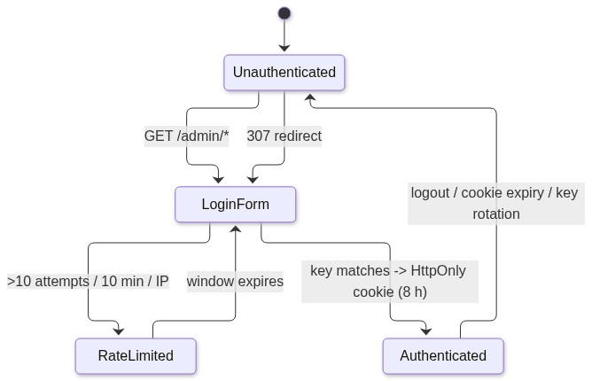
10. Sponsorship campaign lifecycle (web)
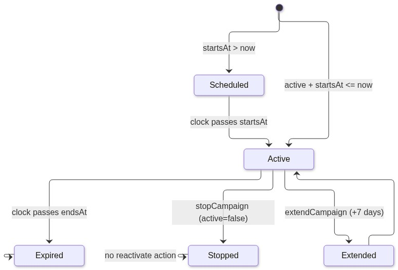
11. Scraper image-backfill machine
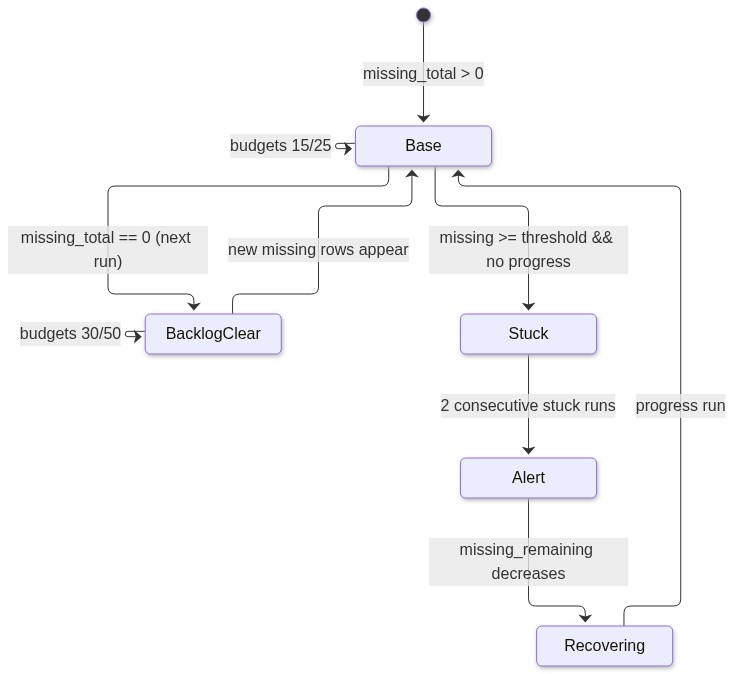